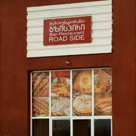

რესტორანიგზისპირიმდებარეობს სოფელ ჩიხაში,34ქ 49 ჩიხში
ეს რესტორანი გამოირჩევა გემრიელი კერძებით და გამორჩეული მოსამსახერეებით
რესტორანში ასევე არის შაურმა კინგი,ცივი თუ ცხელი კერძები და ლუდი გატანით
აქ ასევე შეხვდები უგემრიელეს ხინკალსა თუ პიცას
რესტორანს ასევე აქვს მიტანის სერვისი რომელიც ემსახურება ქალაქ საჩხერესა და მის სოფლებს